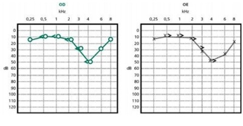
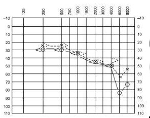
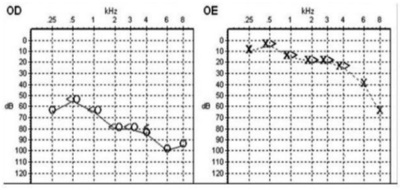

Questão 1 · NR7 Programa de Controle Médico de Saúde Ocupacional · 4000139851Em relação à realização de avaliações médicas e à emissão do Atestado de Saúde Ocupacional (ASO) do trabalhador contratado pelo regime da Consolidação das Leis do Trabalho, é correto afirmar:
A A avaliação de aptidão é baseada na função descrita e riscos ocupacionais especificados no Programa de Controle Médico de Saúde Ocupacional, que obrigatoriamente devem constar do texto do ASO, bem como a identificação do médico coordenador e do médico que realizou o exame.
B De acordo com a Lei nº 8.080/90 é função dos médicos do SUS a avaliação ocupacional de aptidão para o trabalho e a emissão dos ASOs.
C O profissional que realiza o exame ocupacional, ao identificar ou suspeitar de um dado quadro clínico no trabalhador avaliado, deve iniciar procedimento de investigação clínico-laboratoriais e anotar no ASO esses procedimentos e os resultados quando “normais” para atestar a aptidão.
D Após o exame médico admissional, os ASOs devem ser emitidos anualmente quando da realização dos exames periódicos, exceto para os demissionais, que serão emitidos a qualquer tempo.
E O ASO deve ser emitido em três vias (empregador, trabalhador e auditoria do Ministério do Trabalho) assinadas pelo médico emissor e também pelo trabalhador.
Questão 2 · Sigilo prof issional · NR7 Programa de Controle Médico de Saúde Ocupacional · 4000062278Um médico, durante um exame admissional de aptidão física e/ou mental, descobre que o candidato à vaga é portador do vírus da imunode ciência humana (HIV). Com base no Código de Ética Médica, assinale a alternativa que apresenta, corretamente, a conduta do médico nesse caso.
A Comunicar ao empregador que o candidato é portador do HIV e o aconselhá-lo a não o contratar para preservar a empresa de prejuízos futuros.
B Comunicar ao empregador que o candidato é portador do HIV, mas aconselhar a sua admissão se este estiver apto para o trabalho para o qual será contratado.
C Não comunicar ao empregador, mas comunicar à seção de pessoal da empresa que o candidato é portador do HIV para que esta tome as medidas legais cabíveis.
D Não comunicar ao empregador nem à seção de pessoal da empresa, mas aconselhar a empresa à não contratação, para preservá-la de prejuízos futuros.
E Não comunicar ao empregador nem à seção de pessoal da empresa, informando apenas quanto à capacidade ou não do candidato em exercer a função naquela vaga.
Questão 3 · NR7 Programa de Controle Médico de Saúde Ocupacional · 4000051023Perda Auditiva induzida por Ruído PAIR ou Perda Auditiva induzida por níveis de Pressão Sonora Elevados PAINPSE Homem de 46 anos trabalha há 20 anos como serralheiro em o cina nos fundos de sua casa, sem registro trabalhista e sem recolhimento previdenciário. Ao procurar emprego registrado, é submetido a exame médico de admissão e realiza audiometria cujo resultado apresenta-se abaixo. Em relação ao caso, considere as seguintes afirmativas: 1. Classifica-se como perda neurosensorial bilateral, já de grau moderado, 50dB em 4kHz. 2. Enquadra-se como doença relacionada ao trabalho (PAIR), mesmo sendo autônomo. 3. Trata-se de perda chamada sintomática, com falha na capacidade de comunicação verbal pelas faixas de perda. 4. Como o paciente vai trabalhar 08 horas/dia em ambiente exposto a ruído entre 75 e 80 dB(A), o Atestado de Saúde Ocupacional – ASO será emitido como “INAPTO”. Assinale a alternativa correta.

A Somente a afirmativa 2 é verdadeira.
B Somente as afirmativas 1 e 4 são verdadeiras.
C Somente as afirmativas 3 e 4 são verdadeiras.
D Somente as afirmativas 1, 2 e 3 são verdadeiras.
E As afirmativas 1, 2, 3 e 4 são verdadeiras.
Questão 4 · NR32 Segurança e Saúde no Trabalho em Serviços de Saúde · 4000050989Levando em consideração a NR 32, de 2005, atualizada pela Portaria GM no 1748, de agosto de 2011, do então Ministério do Trabalho e Emprego, e o conhecimento técnico sobre radiações ionizantes, assinale a alternativa correta.
A Os estabelecimentos de saúde com setor de radiodiagnóstico médico devem elaborar um Programa de Proteção Respiratória (PPR) por ser o sistema respiratório o principal sistema acometido durante a exposição à radiação ionizante.
B Os trabalhadores que realizam atividades em áreas onde existem fontes de radiações ionizantes devem ser submetidos à monitoração anualmente, mediante dosimetria individual.
C A proteção radiológica dos trabalhadores expostos às radiações ionizantes está baseada em três princípios básicos de radioproteção, que são: tempo de exposição; distância da fonte e conhecimento técnico dos trabalhadores sobre radiações.
D As salas de raios X dos serviços de radiodiagnóstico médico ficam contaminadas com radiações ionizantes de forma que o auxiliar de serviços gerais que realiza a limpeza da sala possui exposição a essas radiações e deve ser monitorado quanto à exposição ocupacional à radiação.
E Em relação ao poder de penetração na matéria, entre as radiações ionizantes alfa, beta e gama, as radiações gama são as que possuem maior poder de penetração.
Questão 5 · Prevenção Primária · NR6 Equipamento de Proteção Individual · 4000042130Quanto aos Equipamentos de Proteção Individuais (EPI), é correto afirmar:
A Não são de uso obrigatório para empregadas domésticas.
B Sua aquisição é competência do empregado.
C São exemplos de prevenção terciária.
D São exemplos de proteção específica na prevenção primária.
E São exemplos de promoção da saúde na prevenção secundária.
Questão 6 · NR7 Programa de Controle Médico de Saúde Ocupacional · Pneumoconioses · 4000033835Homem de 57 anos, ex-trabalhador em mina subterrânea de extração de ouro, onde atuou por 15 anos em atividades de perfuração de rocha até aposentar-se, apresenta-se na UBS com queixa de dispneia aos grandes esforços, tosse seca e fraqueza. Nega comorbidades, antecedentes mórbidos e uso de medicamentos. Tabagista até há 10 anos com relato de 15 maços/ano. Visando estabelecer o diagnóstico, o médico assistente deve solicitar PRIORITARIAMENTE:
A biópsia pulmonar por agulha.
B espirometria.
C radiografia simples de tórax padrão OIT.
D tomografia de tórax de alta resolução.
Questão 7 · NR26 Sinalização de Segurança · Riscos Ocupacionais · 4000024943Os riscos estão presentes nos locais de trabalho e em todas as demais atividades humanas, comprometendo a segurança das pessoas e a produtividade da empresa. Assinale a alternativa que não pertence à categoria de risco biológico (cor marrom).
A Vírus.
B Bactérias.
C Protozoários.
D Acidentes com animais peçonhentos.
E Fungos.
Questão 8 · NR32 Segurança e Saúde no Trabalho em Serviços de Saúde · 4000010945A respeito de medidas de controle ambiental, grupo de medidas inclui adaptação de consultórios que precisam ser arejados, com entrada de luz solar e janelas abertas. Sendo incorreto que:
A ventiladores direcionados para janelas podem contribuir para criar um direcionamento do fluxo de ar para área externa.
B exaustores exercem essa função de forma mais eficaz. Quando adquiridos, devem levar em consideração a capacidade do equipamento e o volume de ar da sala que deve ser trocado cerca de seis a 15 vezes por hora.
C a instalação de aparelhos de ar condicionado em consultórios facilita a obtenção de exaustão adequada.
D em locais muito quentes, cuja utilização de aparelhos de ar condicionado proporciona conforto adicional, estudo de fluxo e adequação do exaustor, com trocas adequadas ao condicionador de ar, pode ser feito por profissionais qualificados.
Questão 9 · NR7 Programa de Controle Médico de Saúde Ocupacional · Pneumoconioses · 4000130399SÃO ELEMENTOS FUNDAMENTAIS PARA O DIAGNÓSTICO DAS PNEUMOCONIOSES:
A História ocupacional, prova de função pulmonar.
B Tomografia computadorizada de alta resolução, lavado bronco-alveolar.
C História ocupacional e radiograma tórax.
D Espirometria e tomografia computadorizada de alta resolução.
Questão 10 · Doenças osteomusculares relacionadas ao trabalho DORT Lesão por esf orços repetitivos LER · 4000128211NR17 Ergonomia Os Distúrbios Osteomusculares Relacionados ao Trabalho (DORT) constituem um dos grupos de patologias relacionados ao trabalho mais noti cados no Brasil. Durante a realização de uma consulta médica PSP, 32 anos, trabalhador de linha de montagem da indústria automobilística queixou-se de dor no membro superior esquerdo, associando seu surgimento a fatores de risco presentes no seu trabalho. Dos fatores citados por PSP, a seguir listados, qual NÃO está potencialmente relacionado ao desenvolvimento de Distúrbio Osteomusculares Relacionados ao Trabalho - DORT:
A Excesso de variabilidade da tarefa
B Pressão mecânica localizada
C Posturas que podem forçar os limites da amplitude das articulações
D Permanência por tempo prolongado no membro superior acima do nível do ombro
Questão 11 · Benef ícios Previdenciários · NR7 Programa de Controle Médico de Saúde Ocupacional · 4000128210Comunicação de Acidente de Trabalho CAT MJS, 45 anos, professora de história do ensino médio há 20 anos, trabalha com carteira assinada em uma instituição de ensino privada onde tem jornada semanal variável de 40 a 48 horas. Há 12 meses vem evoluindo com perda súbita da voz durante as aulas, perda de volume da voz, tosse seca e rouquidão. Procurou médico otorrinolaringologista que diagnosticou calo de pregas vocais relacionado ao trabalho e prescreveu repouso vocal por 30 dias com afastamento do trabalho e reabilitação com fonoaudiólogo. O médico assistente orientou ainda MJS a procurar o médico do trabalho da instituição contratante, o qual, CORRETAMENTE, adotou as seguintes condutas:
A Emissão da Comunicação de Acidente de Trabalho (CAT), solicitação de investigação do ambiente de trabalho pelo Ministério do trabalho e solicitação à direção da escola de pagamento de adicional de insalubridade.
B Emissão da Comunicação de Acidente de Trabalho (CAT), relatório de encaminhamento da docente à perícia do INSS, solicitação à direção da escola de sala com menor ruído de fundo, menor número de alunos e aparelho de amplificação de som para a docente quando retorno ao trabalho.
C Encaminhamento da docente para a Unidade Básica de Saúde para emissão da notificação ao SINAN e do laudo de insalubridade, encaminhamento ao INSS com solicitação de pecúlio de acidente de trabalho e afastamento definitivo da atividade docente.
D Emissão da notificação ao SINAN, encaminhamento à perícia de acidente de trabalho do INSS com solicitação de pagamento de adicional de insalubridade à docente, envio de relatório com situação detalhada da docente à direção da escola.
Questão 12 · NR7 Programa de Controle Médico de Saúde Ocupacional · Nódulos Vocais · 4000121104Distúrbio de Voz Relacionado ao Trabalho DVRT Mulher de 40 anos apresenta rouquidão intermitente, com piora progressiva no último ano. Relata que inicia a semana com voz quase normal, mas na sexta-feira ca bem rouca, precisando de muita força para conseguir falar. AP: professora há 15 anos, trabalhando em sala de aula em dois períodos do dia. Nega tabagismo. O diagnóstico mais provável é
A nódulos de pregas vocais.
B edema de Reinke.
C sulco vocal.
D laringite posterior.
Revisar: possível letra faltando em enunciado
Questão 13 · · 4000121096Perda Auditiva induzida por Ruído PAIR ou Perda Auditiva induzida por níveis de Pressão Sonora Elevados PAINPSE Presbiacusia Homem de 75 anos apresenta di culdade para entender as pessoas e ouvir televisão em casa. Nega otorreia, vertigem ou zumbido. AP: Hipertenso há 15 anos, em uso de medicação com controle adequado, diabetes mellitus, controlado com uso de medicação oral. Sempre trabalhou como motorista de caminhão. Exame físico: Otoscopia normal. Audiometria: Imagem a seguir. A hipótese diagnóstica é

A presbiacusia com perda auditiva condutiva bilateral, apresentando perda “em gota” em 6000 e 8000 Hz, na audiometria.
B perda auditiva induzida por ruído (PAIR), com perda auditiva condutiva bilateral, com “gota acústica” em 6000 Hz, na audiometria.
C presbiacusia, com perda auditiva neurossensorial bilateral, e perda descrescente “em rampa”, na audiometria.
D perda auditiva induzida por ruído (PAIR), com perda auditiva neurossensorial bilateral, descrescente, com “gota acústica” em 6000 Hz, na audiometria.
Questão 14 · NR4 Serviços Especializados em Engenharia de Segurança e em Medicina do Trabalho · 4000115742A Norma Regulamentadora que estabelece sobre os Serviços Especializados em Engenharia de Segurança e em Medicina do Trabalho é a:
A NR 3
B NR 4
C NR 5
D NR 6
E NR 7
Questão 15 · Normas Regulamentadoras · NR32 Segurança e Saúde no Trabalho em Serviços de Saúde · 4000105644NR7 Programa de Controle Médico de Saúde Ocupacional Correlacione adequadamente: a) (NR15); b) (NR7); c) (NR9); d) (NR32); e) (NR6); ( ) Segurança e Saúde no Trabalho em Saúde; ( ) Equipamento de Proteção Individual (EPI); ( ) Atividades e Operações Insalubre; ( ) Prog. de Controle Med de Saúde Ocupacional (PCMSO); ( ) Prog de Prevenção do Riscos Ambientais (PPRA); Marque o item correto:
A d, a b, c, e
B a, b, c, e, d
C a, c, b, d, e
D d, e, a, b, c
E e, c, a, b, d
Questão 16 · Perda Neurossensorial · NR7 Programa de Controle Médico de Saúde Ocupacional · 4000098445Perda Auditiva induzida por Ruído PAIR ou Perda Auditiva induzida por níveis de Pressão Sonora Elevados PAINPSE Ao comparar a perda auditiva relacionada ao ruído ocupacional e a música que ouvimos pode-se dizer que:
A A música não induz à perda auditiva por ser um som harmônico.
B Com a mesma intensidade e tempo de exposição, a música é menos danosa.
C Com a mesma intensidade e tempo de exposição, a música é mais danosa.
D Ambos são danosos dependendo da intensidade e do tempo de exposição.
Questão 17 · Tendinite do Manguito Rotador ou Síndrome do Manguito Rotatório · NR17 Ergonomia · 4000098265Operador de máquina em indústria de autopeças. O trabalho consiste em pegar uma peça metálica (1 kg) em uma caixa disposta sobre um palete à sua esquerda, colocá-la dentro do torno de usinagem que está à sua frente, na altura média da linha mamilar. A seguir, fecha a porta por acionamento automático, retira a peça após 5 segundos e a coloca em uma caixa à sua direita. Produção de 1200 peças por turno de 8 horas. O TRABALHO OFERECE RISCO PARA:
A Compressão de raiz nervosa cervical.
B Síndrome do túnel do carpo.
C Tendinite de supra-espinhal.
D Tendinite do cabo longo do bíceps.
Questão 18 · NR15 Atividades e Operações Insalubres · 4000091854Uma gestante refere que trabalha como operadora de bomba de combustível. Considerando a legislação trabalhista brasileira, assinale a afirmação CORRETA.
A Deve-se fornecer atestado médico afastando-a do trabalho durante o primeiro trimestre da gravidez e recomendar o uso de EPI (Equipamento de Proteção Individual) durante o restante da gravidez.
B É garantia da empregada a manutenção do pagamento do adicional de insalubridade e periculosidade, nos valores anteriores à gestação, caso ela seja afastada de sua função.
C Orientar o uso de EPI (equipamento de proteção individual) e atestar a gestação, pois a empregada passa a ter um aumento no percentual de insalubridade.
D Ela passa a ter direito à redução de 30% da jornada de trabalho, mantendo a mesma remuneração, além do fornecimento do EPI (Equipamento de Proteção Individual).
E Deve-se solicitar a transferência de função, pois é assegurada a toda e qualquer empregada gestante a transferência de função quando a atividade normalmente prestada for prejudicial à gestação.
Questão 19 · NR7 Programa de Controle Médico de Saúde Ocupacional · 4000090550Considere os indicadores biológicos abaixo: I - Fenol na urina, para o fenol. II. - Chumbo na urina, para chumbo tetraetila(orgânico). III. - Acetilcolinesterase eritrocitária no sangue, para os carbamatos. A detecção de quais deles, além de poder mostrar exposição excessiva no ambiente de trabalho, pode indicar doença ou uma disfunção do sistema biológico?
A Apenas de I
B Apenas de II
C Apenas de III
D Apenas de I e II
E De I,II e III
Questão 20 · NR15 Atividades e Operações Insalubres · 4000060865De acordo com o anexo 1 da NR 15 da Portaria nº 3.214/78, os níveis de ruído contínuo ou intermitente devem ser medidos em decibéis (dB) com instrumento de nível de pressão sonora operando no circuito de compensação “A” e circuito de resposta lenta (SLOW). As leituras devem ser feitas próximas ao ouvido do trabalhador. Assinale a alternativa que apresenta, corretamente, o limite de tolerância, em decibéis (dB), para o trabalhador exposto a ruído contínuo ou intermitente em jornada de trabalho de 8 horas.
A 75 dB(A).
B 80 dB(A).
C 85 dB(A).
D 90 dB(A).
E 95 dB(A).
Questão 21 · NR15 Atividades e Operações Insalubres · 4000060857De acordo com a NR 15, da Portaria Ministerial no 3.214/78, que regulamentou a Lei no 6.514/77, as atividades ou as operações insalubres caracterizadas por laudo técnico feito por Médico do Trabalho ou Engenheiro de Segurança do Trabalho, determinarão, no caso em que se zer necessário, o pagamento de adicional pecuniário ao trabalhador. Assinale a alternativa que apresenta, corretamente, os índices de insalubridade.
A 10%, 20% e 40% do salário do trabalhador, estipulado pela Convenção Coletiva.
B 10%, 20% e 40% do salário mínimo nacional em vigor.
C 20%, 30% e 40% do salário mínimo estadual.
D 30% do salário básico.
E 30% do salário mínimo nacional em vigor.
Questão 22 · NR7 Programa de Controle Médico de Saúde Ocupacional · 4000059994Em relação aos objetivos da avaliação clínica ocupacional, considere as seguintes ações: 1. Estabelecer as medidas necessárias para a eliminação, a minimização ou o controle dos riscos ambientais. 2. Investigar a ocorrência de doenças pregressas ou atuais, relacionadas ou não ao trabalho. 3. Confirmar antecedentes ocupacionais, principalmente a ocorrência de acidentes ou doenças, além de afastamentos. 4. Avaliar todas as funções exercidas e exposições a riscos ocupacionais específicos, registrando as repercussões na saúde ocorridas em cada uma delas. São objetivos da avaliação clínica ocupacional:
A 1 e 2 apenas.
B 1 e 3 apenas.
C 2 e 4 apenas.
D 2, 3 e 4 apenas.
E 1, 2, 3 e 4.
Questão 23 · NR5 Comissão Interna de Prevenção de Acidentes · 4000057036Uma empresa com 85 funcionários foi noti cada para constituir a Comissão Interna de Prevenção de Acidentes-CIPA. Nesse sentido, é correto afirmar que:
A a comissão interna de prevenção de acidentes está prevista na NR-4.
B a CIPA deverá ser formada por representantes designados pelos empregados.
C os representantes dos empregados serão designados pelo empregador.
D o objetivo da CIPA é a prevenção de doenças e acidentes resultantes do trabalho.
E a duração do mandato dos membros eleitos da CIPA será de 2 anos.
Questão 24 · NR7 Programa de Controle Médico de Saúde Ocupacional · 4000056950Perda Auditiva induzida por Ruído PAIR ou Perda Auditiva induzida por níveis de Pressão Sonora Elevados PAINPSE A exposição ao ruído, pela frequência e por suas múltiplas consequências sobre o organismo humano, constitui um dos principais problemas de saúde ocupacional e ambiental na atualidade. A Perda Auditiva Induzida pelo Ruído (PAIR) é um dos problemas de saúde relacionados ao trabalho mais frequentes em todo mundo. Com relação a PAIR e suas características, assinale a alternativa CORRETA:
A O ruído ou pressão sonora elevada apresenta-se como único fator de risco para a perda auditiva ocupacional.
B O uso de medicamentos ototóxicos, como as cefalosporinas, associada ao ruído, apresenta sinergismo para a perda auditiva induzida por ruído.
C A perda auditiva de PAIR é do tipo neurossensorial e normalmente bilateral.
D A presença de entalhe na audiometria, com limiares auditivos acima de 25 dB (NA) nas frequências de 500, 1000 e/ou 2000 Hz sugerem PAIR.
E Uma vez cessada a exposição ao ruído, haverá regressão da redução auditiva.
Questão 25 · NR4 Serviços Especializados em Engenharia de Segurança e em Medicina do Trabalho · 4000054367Normas Regulamentadoras Assinale qual é a norma regulamentadora que estabelece sobre os serviços especializados em engenharia de segurança e em medicina do trabalho:
A NR 3
B NR 4
C NR 5
D NR 6
Questão 26 · NR32 Segurança e Saúde no Trabalho em Serviços de Saúde · 4000036915Comunicação de Acidente de Trabalho CAT J.A.S., 38 anos, médico, apresentou uma ferida pérfuro-contusa profunda em segundo quirodáctilo esquerdo, provocada por uma agulha com lúmen contaminada com sangue, durante a punção de um acesso venoso central. Diante desse fato, analise as seguintes afirmativas: I- Deve-se solicitar imediatamente os exames sorológicos para hepatite B, hepatite C e HIV do paciente-fonte e do acidentado. II- Comparecer ao Serviço Especializado em Engenharia de Segurança e em Medicina do Trabalho (SESMT) do hospital para análise do acidente. III- O hospital deve emitir a Comunicação de Acidente de Trabalho (CAT) somente se algum exame sorológico se apresentar reagente. Está(ão) CORRETA(S) a(s) afirmativa(s):
A I e II apenas.
B I e III apenas.
C II e III apenas.
D I, II e III.
Questão 27 · NR32 Segurança e Saúde no Trabalho em Serviços de Saúde · Prof ilaxia pósexposição PEP · 4000036908Os profissionais de saúde que desempenham suas atividades na área assistencial estão expostos frequentemente a possíveis infecções de origem ocupacional. Em relação aos acidentes de trabalho com risco de contaminação com material biológico, é INCORRETO afirmar que:
A Todos os acidentes de trabalho em que haja risco de exposição a material biológico são de notificação compulsória.
B A empresa é obrigada a emitir a Comunicação de Acidente de Trabalho (CAT) para todos os acidentes de trabalho ocorridos com seus empregados, mesmo que não haja afastamento das atividades, até o primeiro dia útil seguinte ao da ocorrência.
C A Profilaxia Pós-Exposição (PPE) ao HIV somente está indicada se a fonte for conhecida e apresentar sorologia positiva para o vírus da AIDS.
D O uso de óculos, como Equipamento de Proteção Individual (EPI), é obrigatório para todos os procedimentos em que haja o risco de projeção de fluidos corpóreos.
Questão 28 · NR7 Programa de Controle Médico de Saúde Ocupacional · 4000019627Perda Auditiva induzida por Ruído PAIR ou Perda Auditiva induzida por níveis de Pressão Sonora Elevados PAINPSE Homem, 38 anos, diabético, socorrista do SAMU há 5 anos, comparece à consulta de retorno. Registro orientado por problemas: (S) Apresenta-se com queixa de zumbido que vem piorando nos últimos meses. Nega história de traumas ou uso de agentes ototóxicos. A esposa refere que o mesmo "está ficando surdo e que precisa repetir várias vezes as palavras para que ele compreenda". (O) Otoscopia: canal auditivo externo pérvio, levemente hiperemiado, sem otorreia ou corpos estranhos. Membrana timpânica branca perolada, sem abaulamentos ou retrações. Foi solicitado um exame audiométrico que detectou perda auditiva neurossensorial moderada em frequências mais elevadas (3 a 6 kHz). Frente ao diagnóstico mais provável, qual alternativa faz parte do plano terapêutico inicial do paciente?
A Afastamento de suas funções laborativas.
B Aprendizagem da linguagem brasileira de sinais.
C Introdução do equipamento de proteção individual.
D Uso de aparelho para amplificação sonora individual.
Questão 29 · Tuberculose TB · Prevenção · NR6 Equipamento de Proteção Individual · 4000016541Em relação à tuberculose, são medidas de controle ambiental e de proteção individual em serviços que atendam grande quantidade de pacientes bacilíferos, EXCETO:
A Deve-se manter o paciente suspeito de tuberculose pulmonar em isolamento respiratório, zelando para que seu tempo de permanência no setor seja o menor possível.
B É recomendado o uso de máscaras N95 para profissionais de saúde que tenham acesso às áreas de alto risco de transmissão em ambientes hospitalares.
C Aos profissionais do laboratório, não é recomenda a utilização de máscaras N95 durante a manipulação de materiais com suspeita de conter bacilos álcool-ácidos resistentes.
D No transporte de doentes bacilíferos ou suspeitos de TB pulmonar em ambulâncias, os profissionais devem utilizar máscaras do tipo N95 e os pacientes devem utilizar máscaras cirúrgicas comuns.
Questão 30 · Acidente de trabalho · NR32 Segurança e Saúde no Trabalho em Serviços de Saúde · 4000015860Comunicação de Acidente de Trabalho CAT Josélia é auxiliar de saúde bucal e trabalha em uma Unidade Básica de Saúde no município de Vitória. Na semana anterior, durante suas atividades de trabalho, após o atendimento diário dos pacientes, ao proceder a lavagem dos materiais e equipamentos utilizados pelo cirurgião dentista durante os procedimentos, teve um dos dedos da mão direita perfurado por uma agulha. Só hoje procurou o Médico de Família e Comunidade, pois cou preocupada após conversa com a enfermeira. Qual o procedimento correto a ser indicado?
A Como a notificação tem que ser feita no decorrer da semana epidemiológica, o que já passou, não é necessário fazer a notificação do caso. Deve-se, no entanto, iniciar imediatamente a profilaxia pós-exposição e fazer testes rápidos para HIV e Hepatites Virais para acompanhamento do caso. Orientar expedição de CAT.
B Deve-se proceder a notificação do acidente, fazer recomendação para expedição de CAT e solicitar sorologias para HIV e Hepatites Virais, repetindo-as em 30 e 90 dias.
C Deve ser efetuada a notificação do acidente, fazer testes rápidos para HIV e Hepatites Virais e iniciar profilaxia pós-exposição em, no máximo, até 72 horas. Recomendar expedição de CAT.
D Como não houve necessidade de afastamento do trabalho, não é necessário recomendar expedição de CAT. Mas deve-se fazer a notificação do acidente e iniciar a profilaxia pós-exposição.
E Como trata-se de agravo de notificação compulsória imediata, tal deve ser efetuado no mesmo dia do atendimento. Caso os testes rápidos para HIV e Hepatites Virais sejam negativos, deve-se iniciar a profilaxia pós- exposição. Orientar expedição de CAT.
Questão 31 · NR7 Programa de Controle Médico de Saúde Ocupacional · 4000011287Perda Auditiva induzida por Ruído PAIR ou Perda Auditiva induzida por níveis de Pressão Sonora Elevados PAINPSE Paciente de 50 anos, sexo masculino, hipertenso e diabético, procura o Médico de Família e Comunidade com queixa de diminuição da acuidade auditiva. Ele nega traumas em região encefálica ou infecções de orelha média quando criança; contudo, refere que trabalha em uma tecelagem há 25 anos. Com base nessas informações, assinale a alternativa correta.
A Esse tipo de queixa não tem relação com o trabalho.
B O diabetes do paciente pode potencializar a perda auditiva induzida pelo ruído.
C A adoção de equipamentos de proteção individual seria suficiente para prevenir a perda auditiva induzida pelo ruído.
D É preciso realizar um estudo do local de trabalho deste senhor para que se possa pensar em perda auditiva induzida por ruído.
E Em se tratando de perda auditiva induzida pelo ruído, o afastamento do estímulo sonoro não interferirá na progressão da doença.
Questão 35 · Doenças osteomusculares relacionadas ao trabalho DORT Lesão por esf orços repetitivos LER · 4000130248NR17 Ergonomia Homem, 18a, procura Unidade Básica de Saúde (UBS) com queixa de dor nas costas há três meses e piora na última semana. Antecedente pessoal: jogador de basquete. Exame físico: estatura = 1,92 m; peso = 69 kg. Assinale a CORRETA:
A Vícios de postura e ausência de alongamento adequado podem estar relacionadoscom a queixa principal.
B Indivíduos com esse porte físico tendem a ter discopatia lombar precoce e deverão serorientados a realizar tomografia de coluna lombar.
C Deverá ser prescrito anti-inflamatório intravenoso inicialmente e por via oral, e casonão haja melhora, prescrição de prednisona.
D melhor orientação a ser dada é interromper imediatamente a atividade esportiva porpelo menos seis meses até a resolução do quadro.
Questão 36 · Intoxicações Exógenas · NR33 Segurança e Saúde nos Trabalhos em Espaços Conf inados · 4000130239Homem, 46a, procura o serviço médico com história de dores de cabeça, tonturas intensas, náuseas e desmaio, na manhã anterior. No momento sem queixas. Refere que este é o terceiro episódio semelhante em menos de um mês. Antecedentes pessoais: nega hipertensão arterial, outras doenças crônicas e consumo de álcool; tabagismo de 42 maços/ano. Histórico ocupacional: porteiro-apontador há cinco anos, em uma garagem subterrânea de uma empresa. Há um mês passou a fazer o controle de veículos no fim do túnel de acesso, anteriormente fazia na entrada. A conduta inicial é:
A Afastar do trabalho por 15 dias para investigação.
B Mudar do local de trabalho para um lugar com ventilação.
C Solicitar avaliação cardiológica.
D Oferecer adesivos definicotina.
Questão 37 · NR17 Ergonomia · 4000128281O estudo da organização do trabalho deve levar em consideração, no mínimo:
A As concentrações ambientais de agentes químicos, físicos e biológicos, os riscos mecânicos e as normas de produção
B As formas de contratação, o conforto no ambiente de trabalho, as demandas judiciais e por organização por local de trabalho
C As normas de produção; o modo operatório; as exigências de tempo; o ritmo de trabalho; o conteúdo das tarefas
D O cumprimento da legislação trabalhista pelo empregador e de cláusulas de saúde da convenção coletiva de trabalho
Questão 38 · NR6 Equipamento de Proteção Individual · 4000111068A norma regulamentadora que estabelece sobre os equipamentos de proteção individual é:
A NR 5.
B NR 6.
C NR 7.
D NR 8.
E NR 9.
Questão 39 · Sigilo prof issional · NR7 Programa de Controle Médico de Saúde Ocupacional · 4000056160Ao examinar um paciente, em um exame médico pré-admissional, descobre-se que o candidato é portador do vírus HIV. Considerando o atual Código de Ética Médica aprovado pelo CFM, assinale a alternativa que apresenta, corretamente, a conduta a ser adotada nesse caso.
A Comunicar ao empregador que o candidato é portador do vírus HIV e aconselhá-lo a não o contratar, para preservar a empresa de prejuízos futuros.
B Comunicar ao empregador que o candidato é portador do vírus HIV, mas aconselhar a sua contratação se este estiver apto para o trabalho para o qual será contratado.
C Não comunicar ao empregador, nem à seção de pessoal da empresa, mas aconselhar a empresa a não contratá- lo, para preservá-la de prejuízos futuros.
D Não comunicar ao empregador, nem à seção de pessoal da empresa, informando-os apenas quanto à capacidade ou não do candidato em exercer a função para a qual será contratado.
E Não comunicar ao empregador, mas comunicar à seção de pessoal da empresa que o candidato é portador do vírus HIV, para que esta tome as medidas legais cabíveis.
Questão 40 · NR32 Segurança e Saúde no Trabalho em Serviços de Saúde · 4000055776Com relação a vacinação ocupacional dos trabalhadores da área de saúde e de acordo com a Norma regulamentadora número 32 (NR-32 ), assinale verdadeiro (V) ou falso (F) para as afirmativas abaixo: ( ) A todo trabalhador dos serviços de súde deve ser fornecido, gratuitamente, programa de imunização ativa contra tétano, difteria, hepatite B e os estabelecidos no PCMSO. ( ) A vacinação deve ser registrada no prontuário clínico individual do trabalhador, não sendo necessário fornecer ao trabalhador comprovante das vacinas recebidas. ( ) A transmissão do vírus da hepatite B (VHB) após exposição a sangue ou líquidos corporais em hospitais representa um risco importante para o pro ssional de saúde, variando de 6% a 30% , na dependência da natureza dessas exposições. Estes profissionais podem ser vacinados contra a Hepatite B sem fazer teste sorológico prévio. ( ) A vacina para Hepatite A é indicada para pro ssionais das unidades de nutrição, e unidades pediátricas ou trabalhadores incluídos no grupo de risco individual. Duas doses (0,6 meses). Assinale a alternativa correta:
A V V V V
B V V F V
C V F V V
D F F F F
E F V V F
Questão 41 · NR7 Programa de Controle Médico de Saúde Ocupacional · 4000055676Perda Auditiva induzida por Ruído PAIR ou Perda Auditiva induzida por níveis de Pressão Sonora Elevados PAINPSE Com relação as afirmativas abaixo sobre Perda Auditiva Induzida por Ruído (PAIR), assinale a alternativa correta: I) Além dos sintomas auditivos frequentes, o trabalhador portador de PAIR também apresenta queixas, como cefaléia, tontura, irritabilidade e problemas digestivos, entre outros. II) Quando o ruído é intenso e a exposição a ele é continuada, em média 85 dB por oito horas por dia, ocorrem alterações estruturais no ouvido médio, que determinam a ocorrência da PAIR. III Agentes químicos ou ambientais podem, em alguns casos, causar perdas auditivas com as mesmas características audiométricas das perdas por ruído. IV A mudança transitória de limiar, pode ocorrer quando a exposição ao ruído é de forma súbita e muito intensa, podendo lesionar, temporária ou definitivamente, diversas estruturas do ouvido.
A II e IV estão corretas apenas.
B II e III estão corretas apenas.
C I e II estão corretas apenas.
D I e III estão corretas apenas.
E III e IV estão corretas apenas.
Questão 42 · Inf ecções relacionadas à assistência à saúde IRAS · Prevenção · 4000026147NR6 Equipamento de Proteção Individual Paciente com 18 anos de idade procurou pronto-socorro com história de pele amarelada, vômitos e fraqueza. Refere estar em tratamento há 10 dias, na Unidade Básica de Saúde - UBS, por tuberculose pulmonar bacilífera. Ao exame físico: PA = 90 X 60 mmHg e FC = 130 bpm. O médico plantonista indicou internação. Com relação às normas de biossegurança, qual a melhor conduta?
A Paciente em quarto com isolamento usando máscara cirúrgica.
B Paciente em quarto comum e profissionais de saúde usando máscara respiratória (N95).
C Não há necessidade de isolamento desse paciente por já ter iniciado o tratamento.
D Paciente em quarto com isolamento usando máscara respiratória (N95).
E Paciente em quarto com isolamento e os profissionais da saúde usando máscara respiratória (N95).
Questão 43 · NR4 Serviços Especializados em Engenharia de Segurança e em Medicina do Trabalho · 4000010959NR7 Programa de Controle Médico de Saúde Ocupacional NR9 Avaliação e Controle das Exposições Ocupacionais a Agentes Físicos Químicos e Biológicos Uma empresa de contabilidade com apenas dez empregados foi classificada com risco ocupacional I (baixo risco). Nesse caso hipotético, para se garantir a saúde do trabalhador, é obrigatória a
A assessoria de um técnico de segurança do trabalho, que poderá ser terceirizado.
B implantação de um Serviço Especializado em Segurança e Medicina do Trabalho.
C solicitação de exames médicos admissionais e demissionais dos empregados.
D elaboração do Programa de Prevenção de Riscos Ocupacionais restrito.
E elaboração do Programa de Controle Médico de Saúde Ocupacional, com indicação de um médico coordenador.
Questão 44 · NR17 Ergonomia · 4000010934A ergonomia visa estabelecer parâmetros que permitam a adaptação
A das condições de trabalho às características psicofisiológicas dos trabalhadores, de modo a proporcionar um máximo de conforto, segurança e desempenho.
B das condições de trabalho relacionadas a levantamento, transporte e descarga de materiais ao trabalhador para evitar doenças.
C do trabalhador às características gerais do trabalho, visando a uma produção eficiente e à prevenção de doenças ocupacionais.
D do trabalhador às condições de trabalho que incluam aspectos relacionados a levantamento, transporte e descarga de materiais.
E do trabalhador aos equipamentos e à própria organização do trabalho, de modo a proporcionar segurança e saúde no trabalho.
Questão 45 · NR4 Serviços Especializados em Engenharia de Segurança e em Medicina do Trabalho · 4000125193De acordo com a Norma Regulamentadora No 4 (NR-4) do Ministério do Trabalho e Previdência Social, as ações de promoção da saúde e proteção da integridade física dos trabalhadores das empresas privadas e públicas, dos órgãos públicos da administração direta e indireta e dos poderes Legislativo e Judiciário que possuam empregados regidos pela Consolidação das Leis do Trabalho (CLT) estão a cargo de qual serviço?
A Serviço Especializado em Engenharia e Vigilância em Medicina Ocupacional.
B Serviço Especializado de Vigilância em Saúde do Trabalhador.
C Serviço Especializado em Engenharia de Segurança e em Medicina do Trabalho.
D Serviço Especializado de Higiene e Medicina do Trabalho.
E Serviço Especializado de Saúde do Trabalhador e Higiene Ocupacional.
Questão 46 · Perda Neurossensorial · 4000099626Perda Auditiva induzida por Ruído PAIR ou Perda Auditiva induzida por níveis de Pressão Sonora Elevados PAINPSE Homem, 48 anos, procura consultório com queixa de zumbido em orelhas há 6 meses. Nega outras queixas. Antecedente pessoal: hipertensão arterial controlada com uso de losartana 80 mg/dia, câncer de tireoide há 15 anos, com exames de seguimento normais (sic). Trabalha em fábrica de papel, na área de produção, com turnos de 6 horas, com uso irregular de equipamento de proteção individual nos últimos 8 anos e trabalhou em escritório de advocacia em serviços gerais. Antecedente familiar: perda auditiva paterna. Exame físico geral: inalterado; otoscopia: normal. Audiometria: (Conforme imagem ). Em relação ao audiograma podemos afirmar que:

A Há perda auditiva compatível com perda auditiva induzida por ruído.
B O ambiente de trabalho oferece pouca condição para explicar exposição a ruído.
C A perda auditiva pode estar relacionada à hipertensão.
D A perda auditiva pode estar relacionada ao tratamento de câncer.
Questão 47 · Previdência Social · NR7 Programa de Controle Médico de Saúde Ocupacional · 4000063666Em relação à medicina ocupacional, identifique como Verdadeiras (V) ou Falsas (F) as seguintes afirmativas: ( ) A justi cativa para um máximo de 15 dias de um atestado de afastamento emitido pelo médico assistente é o Regulamento dos Benefícios da Previdência Social, que prevê perícia médica após o 16º dia; ( ) O médico coordenador do PCMSO (NR-7) deve nomear explicitamente os demais médicos e responsáveis técnicos que irão realizar os procedimentos integrantes das avaliações ocupacionais, de acordo com sua familiaridade com as patologias ocupacionais, incluindo os exames complementares; ( ) Segundo a NR-7, as radiogra as de tórax na investigação de silicose só têm valor legal se forem realizadas nos padrões da Organização Internacional do Trabalho, de 1980; ( ) O médico examinador designado pelo coordenador do PCMSO manterá, após o exame ocupacional, o prontuário do trabalhador sob sua guarda e responsabilidade ética. Assinale a alternativa que apresenta a sequência CORRETA, de cima para baixo:
A V – F – V – F.
B V – V – F – F.
C F – F – V – V.
D F – V – V – F.
E V – F – F – V. ida oib pr ed
Questão 48 · NR7 Programa de Controle Médico de Saúde Ocupacional · 4000063640No setor de prensas de uma metalúrgica, o nível equivalente de pressão sonora é de 95 dB(A). Com relação à programação de avaliação da audição dos trabalhadores desse setor, é CORRETO afirmar que:
A O tempo de repouso auditivo deve ser, no mínimo, de 12 horas.
B O exame audiométrico deve ser realizado nas frequências de 1.000, 2.000, 3.000, 4.000, 6.000 e 8.000 Hz.
C A cor vermelha no traçado audiométrico refere-se à orelha esquerda.
D A otoscopia é um ato médico, portanto, nos casos em que a audiometria é realizada por outro profissional, o laudo não deve ser incluído na avaliação auditiva de referência e na sequencial.
E A aferição acústica do audiômetro deve ser feita semestralmente, principalmente se a empresa pretende seguir as certificações de qualidade (ISO 9000 ou BS 8800).
Questão 49 · NR9 Avaliação e Controle das Exposições Ocupacionais a Agentes Físicos Químicos e Biológicos · 4000114222O Programa de Prevenção de Riscos Ambientais (PPRA), da Norma Regulamentadora nº 9, é de obrigatoriedade de elaboração e implementação por todas as empresas ou instituições que admitam trabalhadores como empregados, com o intuito de prevenção da saúde e da integridade dos trabalhadores. De obrigatoriedade do empregador, constam das ações do PPRA:
A Proteção de riscos dos trabalhadores por agentes físicos, químicos e biológicos; diagnóstico precoce de doenças ocupacionais, divulgação periódica de dados e relatórios ocupacionais.
B Rastreamento precoce de agravos nos trabalhadores; realização de exames periódicos dos trabalhadores e acompanhamento do surgimento de doenças ocupacionais.
C Proteção de riscos dos trabalhadores por agentes físicos, químicos e biológicos; planejamento anual com estratégia e metodologia de ação; registro, divulgação de dados e avaliação.
D Realização de exame admissional, incluindo exames complementares, direcionados para futuras exposições a riscos por agentes físicos, químicos e biológicos, controle periódico às exposições a riscos dos trabalhadores.
E Proteção de riscos dos trabalhadores por agentes físicos, químicos e biológicos, concentrando esforços no rastreamento precoce dos agravos e também de doenças ocupacionais.
Questão 50 · NR32 Segurança e Saúde no Trabalho em Serviços de Saúde · 4000104670Com o objetivo de promover e garantir a integridade física, psíquica e saúde dos trabalhadores, o Ministério do Trabalho, através das Normas Regulamentadoras (NR), estabelece diretrizes relativas à segurança e saúde no ambiente de trabalho. Assinale a alternativa correspondente à Norma que estabelece as medidas de proteção à segurança e à saúde dos trabalhadores dos serviços de saúde.
A NR18.
B NR22
C NR32
D NR36
Questão 51 · Doenças osteomusculares relacionadas ao trabalho DORT Lesão por esf orços repetitivos LER · 4000098027NR17 Ergonomia Paciente em atendimento de rotina em Unidade Básica de Saúde, o pro ssional de saúde identi cou atividade laboral (digitação) associada a LER/DORT. Em relação à prevenção, recomenda-se:
A Utilização de órtese de imobilização de punho.
B Pausas de pelo menos 10 minutos para cada hora ou hora e meia trabalhada.
C Orientação para relaxamento de 30 minutos a cada 4 horas trabalhadas.
D Encaminhamento a médico da saúde ocupacional da empresa.
Questão 52 · NR6 Equipamento de Proteção Individual · 4000060829A Norma Regulamentadora (NR) que estabelece sobre os equipamentos de proteção individual é a:
A NR-5.
B NR-6.
C NR-7.
D NR-8.
E NR-9.
Questão 53 · NR7 Programa de Controle Médico de Saúde Ocupacional · 4000010480A avaliação médica dos trabalhadores para emissão dos atestados de saúde ocupacional (ASO) é muito importante como prevenção de danos à saúde do trabalhador e de terceiros. De acordo com as Normas Regulamentadoras do Ministério do Trabalho e Emprego, assinale a alternativa correta em relação a tipos de ASO e suas emissões.
A Admissional: Deve ser emitido, após análise dos exames complementares previstos no Programa de Controle Médico de Saúde Ocupacional, até o final do período de experiência do trabalhador.
B Periódico de saúde: Sua periodicidade depende somente da idade do trabalhador.
C Retorno ao trabalho: Deve ser emitido por ocasião do retorno do trabalhador afastado a mais de trinta dias, independentemente do motivo.
D Mudança de função: Deve ser emitido somente quando os riscos ocupacionais da nova função forem diferentes dos da antiga.
E Demissional: Somente deve ser emitido por solicitação do trabalhador devido a alguma queixa de saúde.
Questão 54 · Toxicologia ocupacional · NR7 Programa de Controle Médico de Saúde Ocupacional · 4000111532O indicador biológico para o monóxido de carbono é:
A meta-hemoglobina.
B ácido hipúrico.
C carboxihemoglobina.
D metanol.
E oxihemoglobina.
Questão 55 · NR7 Programa de Controle Médico de Saúde Ocupacional · 4000111460Na intoxicação pelo tolueno, está aumentada a excreção urinária de:
A 2,5-hexanodiona.
B glutaminas.
C ácido hipúrico.
D ácido metil-hipúrico.
E ácido delta-amino-levulínico.
Questão 56 · NR32 Segurança e Saúde no Trabalho em Serviços de Saúde · Prof ilaxia pósexposição PEP · 4000071752Fernanda, residente de clínica médica, estava em estágio no pronto-socorro do Hospital Universitário, quando chegou uma aluna de enfermagem que havia se ferido com uma agulha durante a coleta de sangue em uma Unidade Básica de Saúde. Considerando que os trabalhadores da saúde estão expostos a acidentes de trabalho com material biológico, assinale a alternativa CORRETA.
A A Profilaxia Pós-Exposição (PPE) é efetiva mesmo quanto iniciada com 72 horas após a exposição.
B No caso de o paciente, comprovar a vacinação para hepatite B, torna-se desnecessária a comprovação de imunidade por meio do Anti-HBs.
C Obter o consentimento do acidentado para a realização de exames sorológicos e comprometê-lo com seu acompanhamento durante seis meses.
D Os Equipamentos de Proteção Individual (EPI) constituem-se na proteção determinante dos acidentes de trabalho com material biológico
E Profissionais que já tiveram hepatite B não estão imunes à reinfecção e necessitam de profilaxia pós-exposição.
Questão 57 · NR7 Programa de Controle Médico de Saúde Ocupacional · 4000071723Perda Auditiva induzida por Ruído PAIR ou Perda Auditiva induzida por níveis de Pressão Sonora Elevados PAINPSE A Perda Auditiva Induzida por Ruído (PAIR) é um agravo frequente que acomete a saúde dos trabalhadores. Em relação a esse agravo, assinale a alternativa CORRETA:
A A anamnese ocupacional configura-se como instrumento complementar para a identificação do risco da PAIR.
B A progressão da PAIR mantém-se mesmo com o fim da exposição ao ruído intenso.
C Geralmente a PAIR é unilateral, e pode ocorrer, em alguns casos, em ambas as orelhas.
D Na vigência de PAIR em trabalhador com registro em carteira, deve-se informar à Previdência Social pela Comunicação de Acidente de Trabalho (CAT).
E O risco de PAIR aumenta muito quando a média da exposição está acima de 75 dB(A) por oito horas diárias.
Questão 58 · · 4000062808Perda Auditiva induzida por Ruído PAIR ou Perda Auditiva induzida por níveis de Pressão Sonora Elevados PAINPSE A Norma Regulamentadora do Ministério do Trabalho e Emprego 15 da Portaria/MTb n° 3.214/1978, aborda a perda auditiva induzida pelo ruído (PAIR). Sobre PAIR, é INCORRETO afirmar:
A Mesmo cessada a exposição ao risco, haverá progressão da redução auditiva.
B Tem como características a irreversibilidade, a progressão gradual com o tempo de exposição ao risco, apresentar-se de forma bilateral e simétrica e ser do tipo neurossensorial.
C Os efeitos extra-auditivos provocados pela exposição ao ruído ocupacional se manifestam pela hipertensão arterial, distúrbios gastrintestinais e alterações do sono, entre outros.
D Sua história natual mostra, inicialmente, o acometimento dos limiares auditivos em uma ou mais frequências da faixa de 3.000 a 6.000 Hz.
Questão 59 · NR4 Serviços Especializados em Engenharia de Segurança e em Medicina do Trabalho · 4000056679A Norma Regulamentadora (NR) que estabelece sobre os Serviços Especializados em Engenharia de Segurança e em Medicina do Trabalho é a:
A NR-3.
B NR-4.
C NR-5.
D NR-6.
E NR-7.
Questão 60 · NR7 Programa de Controle Médico de Saúde Ocupacional · NR17 Ergonomia · 4000010587A Norma Regulamentadora n° 17 do Ministério do Trabalho e Emprego trata de ergonomia, principal risco para as doenças osteomusculares. A respeito desse tema, assinale a alternativa correta. Respostas: 1 12 23 34 45 56
A A ergonomia visa estabelecer parâmetros que permitam a adaptação do trabalhador às condições do posto de trabalho, de modo a proporcionar um máximo de conforto, segurança e desempenho eficiente.
B Independentemente do gênero e da idade do trabalhador designado para o transporte manual de cargas, o peso máximo dessas cargas deverá ser de 25 Kg.
C As lesões por Esforços Repetitivos (LER) ocorrem exclusivamente nos membros superiores.
D O trabalhador que retornar às suas atividades, após período superior a trinta dias de licença para tratamento de saúde, deverá submeter-se a exame médico para emissão de atestado de saúde ocupacional, mesmo que não esteja exposto ao risco ergonômico.
E A síndrome do túnel do carpo é uma compressão do nervo ulnar do punho, podendo ocorrer em trabalhadores que executam movimentos repetitivos, como os empacotadores.